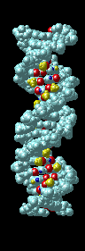
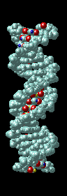

DNA Structure Activity
Problem 3: Grooves in the DNA double helix
Examine the view labeled "phosphate group location". DNA does not have smooth sides like a regular cylinder. Notice the grooves in the surface of the DNA molecule between the phosphate groups. Proteins that interact with DNA often make contact in these grooves. How would you describe the grooves in the DNA surface?
Tutorial
The sugar-phosphate backbones spiral around the outer surface of DNA. Between these backbones are two different sized grooves, designated the major and minor grooves. The major groove is approximately 50% wider than the minor. The view shown below is rotated to show the two different grooves in profile.
|  |
Proteins that interact with DNA often make contact with the edges of the base pairs that protrude into the major groove. The chemical groups on the edges of GC and AT base pairs that are available for interaction in the major (left picture) and minor grooves (right picture), color-coded for different types of interactions, are shown in the pair of illustrations. More information on the recognition elements in the major and minor grooves is found in the views "major groove recogniton" and "minor groove recognition". These pictures are from the views "Major groove recognition" and "Minor groove recognition". |


University of Arizona
Modified: May 27, 1997
Contact the Development Team
http://www.biology.arizona.edu
All contents copyright © 1997. All rights reserved.